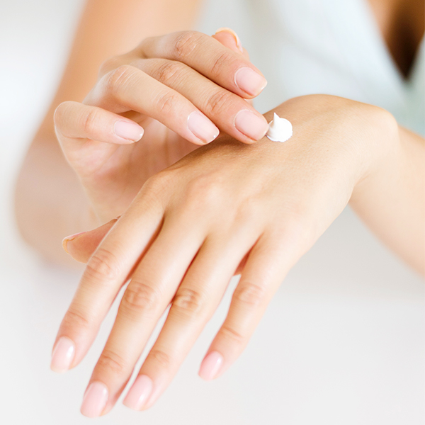
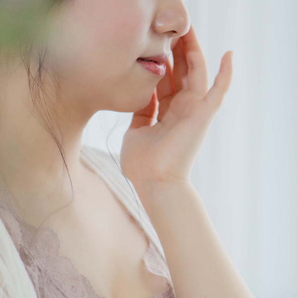

アクシード ミネラル美容クリームtype3は、
化粧下地・乳液・美容液・化粧水をカバーできる理想のオールインワン美容クリームです。
お客様からいただいたご意見をもとに2度の改良を重ねています。
シリーズ累計
10,000個販売！
脅威のリピート率80%以上！
今回たっぷりサイズ100gを
うれしいお手頃価格でご提供いたします。

ベトつかない
しっとりした潤いたっぷりのお肌に
アクシード ミネラル美容クリームtype3100g
- 4,850円(税込)
- 無香料
- 無着色
あなたに透明感のある潤いなめらか美白効果をもたらします。
15種類以上のミネラルや美容成分を配合。
目尻や眉間、額、口元のしわなどが気になりだした方も、アンチエイジング・スキンケアとしてお使いください。
内側からあふれ出すハリと弾力でお肌を満たします。敏感肌の方でも安心して使えるアルコール無添加処方です。
成分
コメ発酵液、水、ワセリン、BG、ミリスチン酸ミレス-3、グリセリン、セテアリルアルコール、セテアレス-20、酢酸トコフェロール、ジメチコン、乳酸Na、PCA- Na、カルボマー、水酸化Na、ベンジルアルコール、メチルパラベン、プロピルパラベン
使用方法
- Step1
- 
- 朝晩の洗顔後、適量を手に取ります。
- Step2
- 
- ケアしたい箇所全体にたっぷりと
なじませてください。 - Step3
- 目安として、10分以上お待ちいただくと、クリームがお肌にしっかりなじみます。
お客様の声
すごい、びっくり！
翌朝スベスベになっていました。
オールインワンクリームって使うの始めてだったのでつけた時はさっぱりしていてイマイチかなと思ったのですが、次の日の朝しっとりしていてスベスベになっていたのでびっくりしました。
量も多いのでケチケチしないでつける事ができるので助かっています。
GKさん（大阪府 40歳 女性）
脂性肌・乾燥肌ですが、
肌は荒れなくなりました。

2個目を購入しました。脂性肌なのに乾燥肌で、冬の乾燥には困っていました。乳液などのクリーム類をつけると、肌荒れをすぐにおこしていたのですが、つけないとカサカサで。
でもこの美容クリームはしっとりうるおって、大丈夫でした。これからも宜しくお願いします。
TYさん（神奈川県 36歳 女性）
以前クリームで失敗しましたが、
アクシードに出会いました。
肌がとても潤って、ついつい肌を触ってしまいます。他社の美容クリームで失敗して、もうクリームは使わないと、心に決めていたのにこれに出会って、気持ちが変ってしまいました。 MRさん（埼玉県 28歳 女性）
使い続けて9ヶ月になりました。
みんなに薦めています！

ミネラル美容クリームはもう9ヶ月目になります。母にもプレゼントして今年の肌は乾燥知らずでした。肌のくすみがなくなり友人に何を使っているの？とよく聞かれて、教えてあげています。友人もミネラル美容クリームのとりこです。 NSさん（東京都 33歳 女性）
よくあるご質問
- 化粧下地として使った場合、ファンデーションを塗ると消しゴムのカスのようなものが出てくるのですが、ファンデー ションとの相性が悪いのでしょうか？
- 化粧下地としてお使いいただく場合は、薄めにのばして10分ほどお待ちいただき、お肌にしっかりとなじませてから、メイクアップをはじめるといいでしょう。すぐにメイクアップをしてしまいますと、カスが出てしまうこともございます。
- UVカットはできますか？
- UVを直接抑制する効果はございません。ただ、「ミネラル美容クリーム」によってお肌が健康になると、皮脂が正常に分泌されるようになり、その皮脂が紫外線から守ってくれます。直射日光を浴びる場合は必ずUVカット商品をお使いください。
- すぐにきれいな肌になりますか？
- 個人差がございますので一概にはいえません。お肌の健康は毎日のスキンケアに加えて生活リズムや食生活にも左右されます。お使いいただく方によって様々な過程を経るでしょう。気長にお使いいただくことによって理想の状態に近づいていきます。
- 敏感肌なのですが使えますか？
- 「ミネラル美容クリームtype3」は刺激が少なく、敏感肌の方にも喜んでお使いいただいております。特に気になる場合はパッチテストなどを行ってからご使用ください。合わないと感じられた場合は使用を中止し専門医にご相談ください。